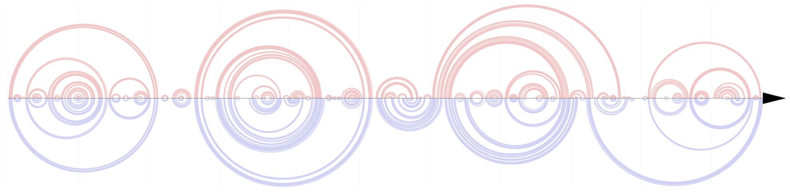
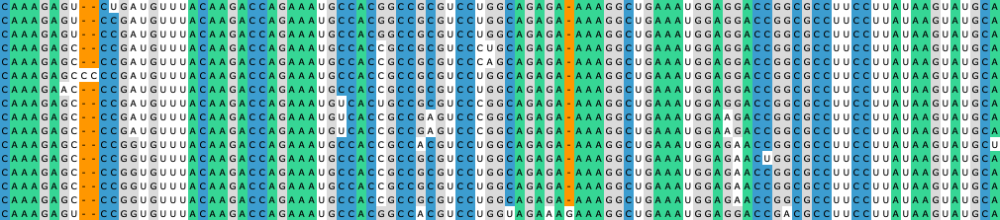
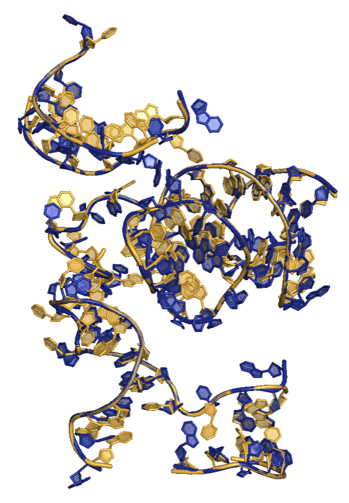
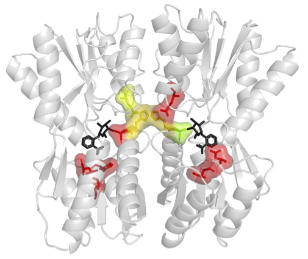

Research
Decoding structural principles of RNA & proteins
My research combines computational and experimental approaches to understand how macromolecules fold, function, and evolve. During my graduate work, I investigated noncoding RNA structure across multiple scales, from primary sequence and secondary structure to three-dimensional architecture. Moving forward, I am interested in understanding how RNA and proteins encode biological information through their structures. Explore some of my research projects and current work below.
Core Research Interests
Research Projects

Secondary structure of HOTAIR, in cellulo (top) & in vitro (bottom)
Architecture of the lncRNA HOTAIR in Breast Cancer
HOTAIR is a long noncoding RNA (lncRNA) implicated in breast cancer progression, but its structural and functional mechanisms are poorly understood. Furthermore, there have been few structures of lncRNAs mapped in cells.
- Experimental structure probing pipeline was adapted to breast cancer cells
- HOTAIR exhibits a 4-domain architecture in cells and in vitro
- Local structures correspond with protein binding and RNA modification sites
- Identified a conserved structural module from Domain 3 across 174 primates
Read the preprint (PDF) →

Multiple sequence alignment of HOTAIR in primates
Noncoding RNA Discovery Across Primate Genomes
LncRNAs are often thought to exhibit poor conservation. However, by focusing our analyses on narrow evolutionary timescales (within primates), we can measure their sequence divergence and start to capture high levels of sequence and structural conservation.
- Developed bioinformatics pipeline for discovery and alignment of RNA genes in 190 unannotated primate genomes
- Enabled comparative sequence and structural analyses of noncoding RNA targets across species
- As proof-of-concept, measured sequence conservation of UTRs and sequence/structural conservation of the lncRNA SChLAP1
Read the preprint (PDF) →

Arena (blue) vs. native (gold) structure, 18S rRNA fragment
Arena: Rapid, Accurate Full-Atomic RNA Reconstruction
Available RNA structures often contain missing atoms. This method reconstructs full-atomic structures from as few as 1 atom per nucleotide.
- Built C++ software for RNA structure prediction and refinement from coarse-grained models
- Software was benchmarked on a diverse set of 361 ncRNAs including tRNAs, rRNAs, snRNAs, and riboswitches
- 353× faster runtime and 54% higher accuracy than state-of-the-art programs
Read the paper (PDF) →

Predicted residue interactions with water (red, P=1), ONPF-LacI
Solvation-Aware Protein Binding Site Design
Before RNA, I worked on proteins. I modeled water molecules in the binding site design of the allosteric protein LacI.
- Developed a protein binding-site design pipeline in Rosetta that incorporates solvation, using Python, Bash, and HPC workflows
- Created PyMOL visualization method for quantifying hydrogen-bonding propensity of residues to water
- Experimentally tested top computational designs with an in cellulo reporter assay
Read the paper (PDF) →
Earlier Work
Protease–Substrate Recognition in Bacteria
As an undergraduate in the Baker Lab at MIT (2018–2019), I studied the mechanism of protease–substrate recognition in Bradyrhizobium japonicum. I designed and purified AAA+ ClpAP protease and substrate constructs, using degradation-curve analysis to quantify kinetic differences.